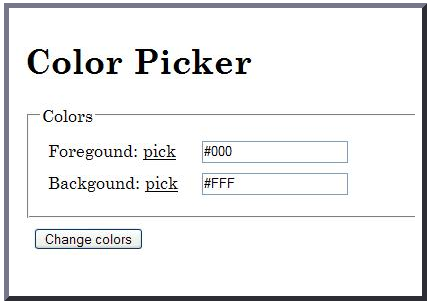
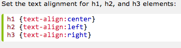
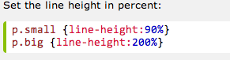
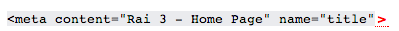
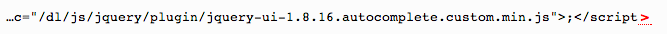
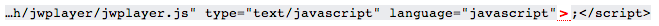
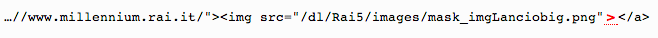
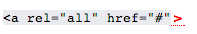
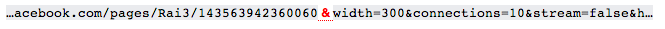
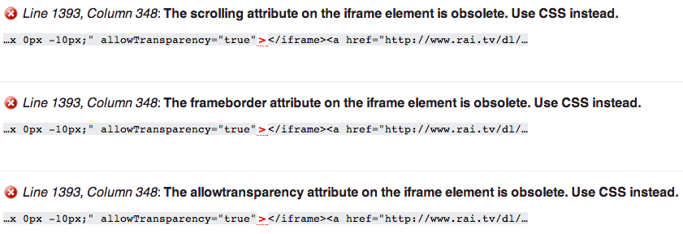

Ti trovi in: Homepage > Verifica di conformità alle WCAG 2.0
Università degli Studi di Udine
Relazioni per il progetto di "Progettazione di Siti e Portali Web"
Valutazione di conformità rispetto allo standard WCAG 2.0 del sito www.rai3.rai.it.
Eseguita da:
- Soprano Michael - soprano.michael@spes.uniud.it
- Perazza Giuliano - perazza.giuliano@spes.uniud.it
In data: 28/07/14
[L] Torna suL’accessibilità è definita come la capacità di un sito web di essere acceduto efficacemente da utenti diversi in contesti diversi con strumenti hardware/software diversi.
La soddisfazione di determinati requisiti relativi all’accessibilità consente la fruizione del sito web anche a utenti che possiedono una o più disabilità, dove con il termine “disabilità” si intende un fenomeno multidimensionale risultante dall’interazione tra persona e ambiente fisico/sociale in cui agisce.
Per conseguire l’accessibilità di un sito web, si possono utilizzare le WCAG 2.0, regole che costituiscono il riferimento per quanto riguarda l’accessibilità stessa applicata al web. Tali regole si riferiscono all’interazione tra l’utente e i contenuti che il web propone, prescindendo dalla forma che essi assumono e dalla tecnologia utilizzata per veicolare tali contenuti; sono definite e redatte dal W3C, organizzazione non governativa il cui principale compito consiste nello stabilire standard tecnici per il World Wide Web inerenti sia i linguaggi di markup che i protocolli di comunicazione.
I contenuti delle WCAG 2.0 sono strutturati in 4 principi di base:
- Percepibilità: le informazioni e gli elementi che costituiscono l’interfaccia utente devono essere presentati in modo che siano facilmente percepiti dagli utenti indipendentemente dalla loro disabilità.
- Utilizzabilità: gli elementi dell’interfaccia utente e la navigazione all’interno del sito devono essere facilmente utilizzabili e non devono richiedere agli utenti azioni che qualcuno di loro potrebbe non essere in grado di eseguire.
- Comprensibilità: le informazioni e il funzioidnto degli elementi dell’interfaccia utente devono essere comprensibili da tutti gli utenti senza alcuna difficoltà.
- Robustezza: Il contenuto deve essere sufficientemente robusto per essere interpretato in modo affidabile dalla maggior parte dei programmi utente, comprese le tecnologie assistive.
Da questi quattro principi discendono le linee guida, che forniscono gli obiettivi di base su cui progettisti e sviluppatori dovrebbero lavorare per rendere il contenuto più accessibile agli utenti con diverse disabilità.
Per ciascuna linea guida vengono definiti dei criteri di successo, affermazioni la cui lettura serve a comprendere o ad implementare una specifica linea guida. Ogni criterio di successo ha associato un livello di conformità, che indica il grado di accessibilità di una pagina, più pagine, o un intero sito.
Esistono i criteri di successo di:
- Livello A: devono essere necessariamente soddisfatti per poter assicurare un livello minimo di accessibilità.
- Livello AA: dovrebbero essere soddisfatti se si vuole assicurare un livello medio di accessibilità.
- Livello AAA: possono essere soddisfatti, e in questo caso, la pagina web raggiunge il livello massimo di accessibilità.
Con il livello massimo di accessibilità una più ampia fascia di persone con diverse tipologie di disabilità a diversa gravità potranno accedere al contenuto della pagina con minore difficoltà.
Per realizzare un rapporto di conformità un team analizza in maniera sistematica le pagine del sito, verificando che i criteri di successo relativi alle singole linee guida di ciascun principio siano effettivamente rispettati; se anche uno solo dei criteri di successo non è soddisfatto, il sito non ottiene il corrispettivo livello di conformità.
Al termine dell’analisi, se il sito è conforme ad uno dei tre livelli, il team deve scrivere una dichiarazione di conformità.
Le linee guida utilizzate in questo documento fanno riferimento alla traduzione italiana delle WCAG 2.0 redatte dal W3C raggiungibili all’indirizzo:
http://www.w3.org/Translations/WCAG20-it/Overview.html#media-equiv
Nel seguito, un elenco con le linee guida analizzate, suddivise in base ai principi di riferimento:
1. Percepibilità
1.1. Alternative testuali
1.2. Tipi di media temporizzati
1.3. Adattabile
1.4. Distinguibile
2. Utilizzabilità
2.1. Accessibile da tastiera
2.2. Adeguata disponibilità di tempo
2.3. Convulsioni
2.4. Navigabile
3. Comprensibilità
3.1. Leggibile
3.2. Prevedibile
3.3. Assistenza nell’inserimento
4. Robustezza
4.1. Compatibile
L’oggetto della valutazione di conformità è il sito web dell’emittente televisiva RAI TRE.
Pagine analizzate
Le pagine analizzate sono le seguenti:
- http://rai3.rai.it/: tale pagina è l’homepage del sito, ovvero il punto principale d’entrata per ciascun utente; risulta dunque interessante analizzarla poiché sicuramente gli utenti l’attraverseranno almeno una volta.
- http://www.rai3.rai.it/dl/PortaliRai/Multimedia/ContentSet-c1ba3be4-d9fd-4c26-9fea-578792b52a9f.html:
tale pagina è risulta interessante perché ricca di contenuti multimediali quali immagini e video, per tale motivo può rappresentare una sfida interessante dal punto di vista dell’accessibilità.
Le pagine sono state analizzate tra la fine di luglio e l’inizio di agosto dell’anno 2014.
Strumenti utilizzati
Gli strumenti tecnici e non utilizzati nell’attività di valutazione sono i seguenti:
- MacBook Pro con sistema operativo Mac OSX 10.9.4
- Browser Google Chrome versione 33.0
- Risoluzione dello schermo pari a 1440x900 pixel
- Processore Intel Core 2 Duo da 2.53 GHz
- 4 Gb di RAM 1067 MHz DDR3
- Traduzione italiana delle WCAG 2.0:
http://www.w3.org/Translations/WCAG20-it/ - Guida alla comprensione dei principi contenuti nelle WCAG 2.0, redatta dal W3C stesso:
http://www.w3.org/TR/UNDERSTANDING-WCAG20/ - Guida rapida di riferimento ai criteri di successo:
http://www.w3.org/WAI/WCAG20/quickref/#text-equiv - Software per analizzare il contrasto tra colori:
http://www.paciellogroup.com/resources/contrastanalyser/
Al termine della valutazione di conformità secondo i principi e le linee guida WCAG 2.0, le pagine analizzate risultano essere NON CONFORMI. Nel seguito, un riassunto dei criteri di successo violati.
| Principio | Linea Guida | Criterio | Livello di conformità | Pagina - 1 | Pagina - 2 |
| 1 | 1.2 | 1.2.1 | A | X | X |
| 1 | 1.2 | 1.2.2 | A | X | X |
| 1 | 1.2 | 1.2.3 | A | X | X |
| 1 | 1.2 | 1.2.4 | AA | X | X |
| 1 | 1.2 | 1.2.5 | AA | X | X |
| 1 | 1.2 | 1.2.6 | AAA | X | X |
| 1 | 1.2 | 1.2.7 | AAA | X | X |
| 1 | 1.2 | 1.2.8 | AAA | X | X |
| 2 | 2.1 | 2.1.1 | A | X | X |
| 2 | 2.1 | 2.1.3 | A | X | X |
| 2 | 2.4 | 2.4.1 | A | X | X |
| 2 | 2.4 | 2.4.7 | AA | X | X |
| 2 | 2.4 | 2.4.8 | AAA | X | X |
| 2 | 2.4 | 2.4.9 | AAA | X | X |
| 3 | 3.1 | 3.1.1 | A | X | X |
| 3 | 3.1 | 3.1.2 | AA | X | X |
| 3 | 3.1 | 3.1.3 | AAA | X | X |
| 3 | 3.1 | 3.1.4 | AAA | X | X |
| 3 | 3.1 | 3.1.5 | AAA | X | X |
| 3 | 3.1 | 3.1.6 | AAA | X | X |
| 4 | 4.1 | 4.1.1 | A | X | X |
| 4 | 4.1 | 4.1.2 | A | X | X |
Risultati dettagliati dell’analisi delle seguenti pagine:
- PAGINA 1 : http://rai3.rai.it/
- PAGINA 2:
http://www.rai3.rai.it/dl/PortaliRai/Multimedia/ContentSet-c1ba3be4-d9fd-4c26-9fea-578792b52a9f.html
1. Percepibilità (PRINCIPIO)
le informazioni e gli elementi che costituiscono l’interfaccia utente devono essere presentati in modo che siano facilmente percepiti dagli utenti indipendentemente dalla loro disabilità.
1.1. Alternative testuali (LINEA GUIDA)
Fornire alternative testuali per qualsiasi contenuto non di testo in modo che questo possa essere trasformato in altre forme fruibili secondo le necessità degli utenti come stampa a caratteri ingranditi, Braille, sintesi vocale, simboli o un linguaggio più semplice.
1.1.1. Contenuti non testuali (CRITERIO DI SUCCESSO)
Definizione: tutti i contenuti non testuali presentati all'utente hanno un'alternativa testuale equivalente che serve allo stesso scopo, ad eccezione di alcune situazioni.
Livello di conformità: A.
Definizione:
Esito:
- PAGINA 1: requisito soddisfatto.
- PAGINA 2: requisito soddisfatto.
Osservazioni: ciascun contenuto non testuale presente sulla pagina possiede una descrizione testuale che consente di comprendere a cosa si riferisce tale contenuto, anche disabilitandolo.
1.2. Tipi di media temporizzati (LINEA GUIDA)
Fornire alternative per i tipi di media temporizzati.
1.2.1. Solo audio e solo video preregistrati (CRITERIO DI SUCCESSO)
Definizione: per i tipi di media preregistrati di solo audio e di solo video, a meno che questi non costituiscano un tipo di media alternativo ad un contenuto testuale chiaramente etichettato come tale, vengono soddisfatti i seguenti punti:
- Solo audio preregistrato: È fornita un'alternativa per il tipo di media temporizzato che presenti informazioni equivalenti per il contenuto di solo audio preregistrato.
- Solo video preregistrato:È fornita un'alternativa per il tipo di media temporizzato oppure una traccia audio che presenti informazioni equivalenti per il contenuto di solo video preregistrato.
Livello di conformità: A
Esito:
- PAGINA 1: requisito non soddisfatto.
- PAGINA 2: requisito non soddisfatto.
Cause: nella pagina sono presenti video preregistrati riguardo ai programmi di Rai 3, ma non è presente un alternativa testuale; ciò potrebbe limitare gli utenti con disabilità cognitive che trarrebbero beneficio dall’analisi in contemporanea dello stesso contenuto espresso tramite due media diversi, ma anche quegli utenti con disabilità uditive che, perciò, non sono in grado di fruire del contenuto dei video.
Rimedio: aggiungere la descrizione testuale del video nella sua pagina; poichè il testo può essere espresso in diverse forme sensoriali, gli utenti disabili ne guadagnerebbero, analizzando in contemporanea lo stesso contenuto espresso tramite due media diversi.
1.2.2. Sottotitoli preregistrati (CRITERIO DI SUCCESSO)
Definizione: per tutti i contenuti audio presenti in tipi di media preregistrati sono forniti sottotitoli sotto forma di tipi di media sincronizzati, eccetto quando tali tipi di media sono l'alternativa di testi e sono chiaramente etichettati come tali.
Livello di conformità: A
Esito:
- PAGINA 1: requisito non soddisfatto.
- PAGINA 2: requisito non soddisfatto.
Cause: nella pagina sono presenti video preregistrati riguardo ai servizi di Rai 3, del tutto assenti di sottotitoli; risulta evidente che gli utenti con disabilità uditive non sono in grado di fruire i contenuti del video stesso.
Rimedio: aggiungere i sottotitoli ai video, oppure una descrizione testuale che consenta di aumentare le possibilità di fruizione del contenuto anche per tale categoria di utenti.
1.2.3. Descrizione audio o tipo di media alternativo (CRITERIO DI SUCCESSO)
Definizione: un'alternativa per i tipi di media temporizzati oppure una descrizione audio per i contenuti video preregistrati sono forniti per i tipi di media sincronizzati, eccetto quando il tipo di media è un tipo di media alternativo ad un contenuto testuale ed è chiaramente etichettato come tale.
Livello di conformità: A.
Esito:
- PAGINA 1: requisito non soddisfatto.
- PAGINA 2: requisito non soddisfatto.
Cause: nella pagina sono presenti video preregistrati riguardo ai servizi di Rai 3, tuttavia non sono disponibili descrizioni audio dei contenuti oppure testuali degli stessi; in tal modo, persone che soffrono di disabilità visive o uditive non possono fruire efficacemente i vari contenuti audiovisivi.
Rimedio: rendere disponibile una descrizione audio oppure testuale dei video, aumentando dunque l’accessibilità del contenuto stesso per gli utenti con disabilità uditive o visive.
1.2.4. Sottotitoli in tempo reale (CRITERIO DI SUCCESSO)
Definizione: I sottotitoli sono forniti per tutti i contenuti audio in tempo reale sotto forma di tipi di media sincronizzati.
Livello di conformità: AA
Esito:
- PAGINA 1: requisito non soddisfatto.
- PAGINA 2: requisito non soddisfatto.
Cause: i contenuti audio in tempo reale presenti sul sito non sono sincronizzati con dei sottotitoli testuali, rendendo dunque la fruizione difficoltosa per le persone completamente sorde oppure con deficit uditivi.
Rimedio: aggiungere dei sottotitoli contenenti non solo le conversazioni, ma anche tutti i restanti effetti sonori consente agli utenti con disabilità uditive di accedere alle informazioni contenute nell’audio trasmesso in tempo reale, poiché la disabilità stessa viene superata dall’accessibilità del contenuto.
1.2.5. Descrizione audio preregistrata (CRITERIO DI SUCCESSO)
Definizione: una descrizione audio è fornita per tutti i contenuti video preregistrati sotto forma di tipi di media sincronizzati.
Livello di conformità: AA.
Esito:
- PAGINA 1: requisito non soddisfatto.
- PAGINA 2: requisito non soddisfatto.
Cause: nei video presenti sulla pagina non è presente alcun tipo di descrizione audio che consenta agli utenti con disabilità di accedere alle informazioni contenute nel video stesso.
Rimedio: fornire una descrizione audio dei contenuti del video, poichè persone non vedenti o ipovedenti, così come quelle con limitazioni cognitive, hanno difficoltà a interpretare visivamente ciò che sta accadendo, perciò trarrebbero beneficio dalla descrizione audio delle informazioni visive.
Osservazioniil requisito si considera già soddisfatto se si è deciso di optare per un alternativa audio nel criterio di successo 1.2.3
1.2.6. Lingua dei segni preregistrata (CRITERIO DI SUCCESSO)
Definizione: l'interpretazione tramite lingua dei segni è fornita per tutti i contenuti audio preregistrati sotto forma di tipi di media sincronizzati.
Livello di conformità: AAA.
Definizione:
Esito:
- PAGINA 1: requisito non soddisfatto.
- PAGINA 2: requisito non soddisfatto.
Cause: non è disponibile alcun tipo di video contente la descrizione tramite lingua dei segni dei contenuti audio erogati in sincronia con il media visuale.
Rimedio: l’aggiunta di una versione dei contenuti in lingua dei segni consente agli utenti con disabilità uditive oppure con difficoltà cognitive per quanto riguarda la lettura che, tuttavia, conoscono tale lingua, di ottenere un accesso ai contenuti sostanzialmente equivalente a quello di una persona normodotata.
1.2.7. Descrizione audio estesa preregistrata (CRITERIO DI SUCCESSO)
Definizione: per tutti i contenuti video preregistrati, se le pause nell'audio principale sono troppo brevi per consentire alle descrizioni audio di comunicare il senso del video, sono fornite delle descrizioni audio estese sotto forma di tipi di media sincronizzati.
Livello di conformità: AAA.
Esito:
- PAGINA 1: requisito non soddisfatto.
- PAGINA 2: requisito non soddisfatto.
Cause: poiché non risulta soddisfatto il requisito di livello A che indica l’adozione di descrizioni audio dei contenuti sottoforma di media sincronizzati, non risulta soddisfatto nemmeno tale requisito di livello superiore che indica l’adozione di descrizioni audio estese.
Rimedio: l’adozione di una descrizione audio preregistrata estesa consente agli utenti con disabilità visive di comprendere meglio il video; tale descrizione viene riprodotta una volta messo in pausa il video stesso, per illustrare nel dettaglio il contenuto appena percepito dall’utente. Questo tipo di descrizione estesa viene utilizzato poiché quella base, sincronizzata con il video, non è sufficiente, se quest’ultimo è ricco di dettagli.
Tipo di media alternativo preregistrato (CRITERIO DI SUCCESSO)
Definizione: un'alternativa per i tipi di media temporizzati è fornita per tutti i contenuti preregistrati di tipi di media sincronizzati e per tutti i tipi di media preregistrati di solo video.
Livello di conformità: AAA.
Esito:
- PAGINA 1: requisito non soddisfatto.
- PAGINA 2: requisito non soddisfatto.
Cause: la mancanza di una descrizione audio e testuale del contenuto video impedisce la fruizione a quegli utenti che hanno disabilità uditive e visive.
Rimedio: il requisito si può considerare superato se è stata adottata l’alternativa testuale nel criterio 1.2.3 e se è stato soddisfatto il criterio 1.2.5; tuttavia nella pagina analizzata ciò non si è verificato.
1.2.9. Solo audio in tempo reale (CRITERIO DI SUCCESSO)
Definizione: fornire un'alternativa per i tipi di media temporizzati che presenta informazioni equivalenti per i contenuti solo audio in tempo reale.
Livello di conformità: AAA.
Esito:
- PAGINA 1: requisito non valutabile.
- PAGINA 2: requisito non valutabile.
Osservazioni: non è presente nessun contenuto costituito solamente da audio in tempo reale.
1.3. Adattabile (LINEA GUIDA)
Creare contenuti che possano essere rappresentati in modalità differenti (ad esempio, con layout più semplici), senza perdere informazioni o la struttura.
1.3.1. Informazioni e correlazioni (CRITERIO DI SUCCESSO)
Definizione: le informazioni, la struttura e le correlazioni trasmesse dalla presentazione possono essere determinate programmaticamente oppure sono disponibili tramite testo.
Livello di conformità: A.
Esito:
- PAGINA 1: requisito soddisfatto.
- PAGINA 2: requisito soddisfatto.
Osservazioni: nella pagina analizzata non è presente un testo che illustri le informazioni fornite da variazioni nella presentazione dei contenuti, tuttavia vengono utilizzati adeguati tag semantici per eseguire il markup della struttura, in tal modo gli utenti con disabilità possono accedere alle informazioni della pagina utilizzando tecnologie assistive in grado di determinare le informazioni fornite dalla presentazione dei contenuti.
1.3.2. Sequenza significativa (CRITERIO DI SUCCESSO)
Definizione: quando la sequenza in cui il contenuto è presentato influisce sul suo significato, la corretta sequenza di lettura può essere determinata programmaticamente.
Livello di conformità: A.
Esito:
- PAGINA 1: requisito soddisfatto.
- PAGINA 2: requisito soddisfatto.
Cause:
Rimedio:
Osservazioni: la pagina analizzata possiede una struttura tale che i contenuti sono ordinati in una sequenza significativa per mezzo della struttura del markup; per tale motivo le tecnologie assistive utilizzate da un utente disabile sono in grado di fornire una corretta sequenza di lettura dei contenuti stessi.
1.3.3. Caratteristiche sensoriali (CRITERIO DI SUCCESSO)
Definizione: le istruzioni fornite per comprendere ed operare sui contenuti non devono basarsi unicamente su caratteristiche sensoriali dei componenti quali forma, dimensione, ubicazione visiva, orientamento o il suono.
Livello di conformità: A.
Esito:
- PAGINA 1: requisito soddisfatto.
- PAGINA 2: requisito soddisfatto.
Osservazioni: ogni contenuto presente sulla pagina ha un identificatore testuale che consente agli utenti di capire di cosa si tratta.
1.4. Distinguibile (LINEA GUIDA)
Rendere più semplice agli utenti la visione e l'ascolto dei contenuti, separando i contenuti in primo piano dallo sfondo.
1.4.1. Uso del colore (CRITERIO DI SUCCESSO)
Definizione: il colore non deve essere utilizzato come unica modalità visiva per rappresentare informazioni, indicare azioni, richiedere risposte o come elemento di distinzione visiva.
Livello di conformità: A.
Esito:
- PAGINA 1: requisito soddisfatto.
- PAGINA 2: requisito soddisfatto.
Osservazioni: nella pagina sono presenti alcuni elementi con un colore diverso dal quello predominante, ad indicare elementi particolari come, ad esempio, il programma correntemente in onda, tuttavia è presente un’etichetta testuale che illustra la tipologia dell’elemento stesso, perciò il colore non è l’unico veicolo di informazione.
1.4.2. Controllo del sonoro (CRITERIO DI SUCCESSO)
Definizione: se un contenuto audio all'interno di una pagina Web è eseguito automaticamente per più di tre secondi è necessario fornire una funzionalità per metterlo in pausa o interromperlo, oppure si deve fornire una modalità per il controllo dell'audio che sia indipendente dal controllo predefinito del sistema.
Livello di conformità: A.
Esito:
- PAGINA 1: requisito non valutabile.
- PAGINA 2: requisito non valutabile.
Osservazioni: nella pagina non è presente alcun contenuto audio che parte in automatico.
1.4.3. Contrasto minimo (CRITERIO DI SUCCESSO)
Definizione: la rappresentazione visiva del testo e di immagini contenenti testo ha un rapporto di contrasto di almeno 4.5:1, fatta eccezione per i seguenti casi:
- Testo grande: Testo grande e immagini contenenti testo grande devono avere un rapporto di contrasto di almeno 3:1.
- Testo non essenziale: Testo o immagini contenenti testo che sono parti inattive di componenti dell'interfaccia utente, che sono di pura decorazione, non visibili a nessuno, oppure che fanno parte di immagini contenenti contenuti visuali maggiormente significativi, non hanno alcun requisito di contrasto.
- Logotipi: Un testo che è parte di un logo o marchio non ha alcun requisito minimo di contrasto.
Livello di conformità: AA.
Esito:
- PAGINA 1: requisito non soddisfatto.
- PAGINA 2: requisito non soddisfatto.
Cause: il colore del font dei testi presenti sulla pagina ha un rapporto di contrasto sufficiente con i colori di sfondo; tuttavia, alcuni di essi hanno una dimensione troppo piccola per far si che il requisito sia soddisfatto.
Rimedio: aumentare le dimensioni del font oppure utilizzare colori diversi in grado di aumentare il rapporto di contrasto; in tal modo gli utenti ipovedenti saranno in grado di fruire efficacemente il contenuto di tali testi.
1.4.4. Ridimensioidnto del testo (CRITERIO DI SUCCESSO)
Definizione: il testo, ad eccezione dei sottotitoli e delle immagini contenenti testo, può essere ridimensionato fino al 200 percento senza l'ausilio di tecnologie assistive e senza perdita di contenuto e funzionalità.
Livello di conformità: AA.
Esito:
- PAGINA 1: requisito non soddisfatto.
- PAGINA 2: requisito non soddisfatto.
Cause: i vari elementi costituenti il layout della pagina hanno delle dimensioni in pixel, senza fare uso delle misure relative di tipo em; inoltre non sono presenti sulla pagina controlli in grado di cambiare il fattore di scale del testo ed infine non è supportato lo zoom del testo effetuato direttamente dallo user agent.
Rimedio: implementare almeno una delle tecniche precedentemente citate; ciò consente agli utenti con blande disabilità visive di adattare il testo alle proprie esigenze visive aumentando l’accessibilità del contenuto stesso.
1.4.5. Immagini di testo (CRITERIO DI SUCCESSO)
Definizione: se le tecnologie utilizzate consentono la gestione della rappresentazione visiva dei contenuti, il testo è utilizzato per veicolare informazioni piuttosto che le immagini di testo, ad eccezione dei seguenti casi:
- Personalizzabile: L'immagine di testo può essere personalizzata visivamente per le esigenze dell'utente;
- Essenziale: Una particolare rappresentazione del testo è essenziale per il tipo di informazioni veicolate.
Livello di conformità: AA.
Esito:
- PAGINA 1: requisito non valutabile.
- PAGINA 2: requisito non valutabile.
Osservazioni: nella pagina non sono presenti immagini di testo.
1.4.6. Contrasto avanzato (CRITERIO DI SUCCESSO)
Definizione: la rappresentazione visiva del testo e di immagini contenenti testo ha un rapporto di contrasto di almeno 7:1, fatta eccezione per i seguenti casi:
- Testo grande: Testo grande e immagini contenenti testo grande devono avere un rapporto di contrasto di almeno 4.5:1;
- Testo non essenziale: Testo o immagini contenenti testo che sono parti inattive di componenti dell'interfaccia utente, che sono di pura decorazione, non visibili a nessuno, oppure che fanno parte di immagini contenenti contenuti visuali maggiormente significativi, non hanno alcun requisito di contrasto.
- Logotipi: Un testo che è parte di un logo o marchio non ha alcun requisito minimo di contrasto.
Livello di conformità: AAA.
Esito:
- PAGINA 1: requisito non soddisfatto.
- PAGINA 2: requisito non soddisfatto.
Cause: poiché non è stato soddisfatto nemmeno il requisito di livello AA 1.4.3, nemmeno quello in oggetto lo sarà.
Rimedio: vedere requisito 1.4.3.
1.4.7. Sottofondo sonoro basso o non presente (CRITERIO DI SUCCESSO)
Definizione: per i contenuti di solo audio preregistrato che (1) contengono principalmente parlato in primo piano (2) non sono CAPTCHA audio o loghi audio e (3) non sono una vocalizzazione intesa per essere principalmente espressione musicale come canto o rap, si applica almeno uno dei seguenti casi:
- Nessun sottofondo: Il sonoro non contiene suoni di sottofondo.
- Spegnimento: Il sottofondo sonoro può essere disattivato.
- 20 dB: Il sottofondo sonoro deve essere inferiore di almeno 20 decibel rispetto al parlato in primo piano, con l'eccezione di suoni occasionali che durano solo per uno o due secondi.
Livello di conformità: AAA.
Esito:
- PAGINA 1: requisito non valutabile.
- PAGINA 2: requisito non valutabile.
Osservazioni: non sono presenti contenuti di solo audio preregistrato.
1.4.8. Presentazione visiva (CRITERIO DI SUCCESSO)
Definizione: per la presentazione visiva di blocchi di testo, è disponibile una modalità per conseguire i seguenti obiettivi:
- I colori del testo in primo piano e dello sfondo possono essere scelti dall'utente.
- La larghezza non supera gli 80 caratteri o glifi (40 se CJK).
- Il testo non è giustificato (allineato sia al margine destro che al margine sinistro).
- Lo spazio tra righe (interlinea) è almeno di uno spazio e mezzo all'interno del paragrafo mentre lo spazio tra paragrafi, è almeno una volta e mezzo più grande rispetto all'interlinea.
- Il testo può essere ridimensionato fino al 200 percento senza il supporto delle tecnologie assistive in modo da non richiedere all'utente di dover scorrere orizzontalmente per leggere una riga di testo in una finestra a schermo intero.
Livello di conformità: AAA.
Esito:
- PAGINA 1: requisito non soddisfatto.
- PAGINA 2: requisito non soddisfatto.
Cause: la pagina non risulta soddisfare nessuna delle proprietà elencate nella definizione del requisito risulta soddisfatta; la quinta proprietà, in particolare, non viene soddisfatta nemmeno nel criterio di livello AA 1.4.4; un eventuale applicazione del criterio può migliorare l’accessibilità della pagina stessa per utenti che possiedono diverse tipologie di disabilità.
Rimedio:
- Implementare un color picker che consenta di selezionare il colore del foreground e del background.
-

- Utilizzare delle misure relative di tipo em nel codice css per fare in modo che le righe dei box di testo abbiano, all’incirca, 80 caratteri ciascuna.
- Specificare tramite codice css l’allineamento del testo a sinistra o a destra.
-

- Specificare tramite codice css l’interlinea necessario per il rispetto del requisito.
-

1.4.9. Sottofondo sonoro basso o non presente (CRITERIO DI SUCCESSO)
Definizione: per i contenuti di solo audio preregistrato che (1) contengono principalmente parlato in primo piano (2) non sono CAPTCHA audio o loghi audio e (3) non sono una vocalizzazione intesa per essere principalmente espressione musicale come canto o rap, si applica almeno uno dei seguenti casi:
- Nessun sottofondo: Il sonoro non contiene suoni di sottofondo.
- Spegnimento: Il sottofondo sonoro può essere disattivato.
- 20 dB: Il sottofondo sonoro deve essere inferiore di almeno 20 decibel rispetto al parlato in primo piano, con l'eccezione di suoni occasionali che durano solo per uno o due secondi.
Livello di conformità: AAA.
Esito:
- PAGINA 1: requisito non valutabile.
- PAGINA 2: requisito non valutabile.
Osservazioni: non sono presenti contenuti di solo audio preregistrato.
2. Utilizzabile (PRINCIPIO)
I componenti e la navigazione dell'interfaccia utente devono essere utilizzabili.
2.1. Accessibile da tastiera (LINEA GUIDA)
Rendere disponibili tutte le funzionalità tramite tastiera.
2.1.1. Tastiera (CRITERIO DI SUCCESSO)
Definizione: tutte le funzionalità del contenuto sono utilizzabili tramite un'interfaccia di tastiera senza richiedere tempi specifici per le singole battiture, salvo il caso in cui sia la funzionalità di fondo a richiedere un input che dipende dal percorso del movimento dell'utente e non solo dai suoi punti d'arrivo.
Livello di conformità: A
Esito:
- PAGINA 1: requisito non soddisfatto.
- PAGINA 2: requisito non soddisfatto.
Cause: nella pagina non è implementata alcuna funzionalità che consenta la navigazione tramite tastiera.
Rimedio: la navigazione tramite tastiera può essere ottenuta in diversi modi; due esempi sono i seguenti:
- Utilizzo dell’attributo accesskey nei tag html, in modo da indicare con quale tasto può essere raggiunto l’elemento stesso.
- Utilizzo dell’evento javascript di tipo onkeypress che consente di eseguire determinate funzioni alla pressione di un tasto.
Gli utenti con disabilità visive, con difficoltà motorie alle mani oppure coloro che utilizzano tecnologie assistive che forniscono un’interfaccia alternativa per la tastiera traggono benefici dalla soddisfazione del criterio in oggetto.
2.1.2. Nessun impedimento all’uso da tastiera (CRITERIO DI SUCCESSO)
Definizione: se il focus può essere portato tramite interfaccia di tastiera su un componente della pagina, deve anche poter essere spostato dallo stesso componente sempre tramite interfaccia di tastiera e, se a tal fine non fosse sufficiente l'uso dei normali tasti freccia o tab o l'uso di altri metodi di uscita standard, l'utente deve essere informato sul metodo per rilasciare il focus.
Livello di conformità: A.
Esito:
- PAGINA 1: requisito soddisfatto.
- PAGINA 2: requisito soddisfatto.
Osservazioni: è possibile scorrere l’intera pagina utilizzando il tasto tab della tastiera, tuttavia è difficile capire su quale elemento risulta esserci il focus
2.1.3. Tastiera, nessuna eccezione (CRITERIO DI SUCCESSO)
Definizione: tutte le funzionalità del contenuto sono utilizzabili tramite un'interfaccia di tastiera senza richiedere tempi specifici per le singole battute.
Livello di conformità: AAA.
Esito:
- PAGINA 1: requisito non soddisfatto.
- PAGINA 2: requisito non soddisfatto.
Cause: poiché non risulta soddisfatto il requisito di livello A 2.1.1, nemmeno il requisito in oggetto lo è.
Rimedio: utilizzare le tecniche indicate nel requisito 2.1.1 per ottenere un’implementazione almeno parziale della navigazione da tastiera; rimangono esclusi dalla fruizione mediante tastiera i player video presenti sulla pagina. Utenti con disabilità visive o motorie difficilmente potranno fruire pienamente del contenuto.
2.2. Adeguata disponibilità di tempo (LINEA GUIDA)
Fornire agli utenti tempo sufficiente per leggere ed utilizzare i contenuti
2.2.1.1. Regolazione dei tempi d’esecuzione (CRITERIO DI SUCCESSO)
Definizione: per ogni temporizzazione presente nel contenuto, è soddisfatto almeno uno dei seguenti casi:
- Spegnimento: All'utente è consentito arrestare il limite di tempo prima di raggiungerlo; oppure
- Regolazione: All'utente è consentito regolare il limite di tempo prima di raggiungerlo in un'ampia gamma che sia almeno dieci volte superiore alla durata dell'impostazione predefinita; oppure
- Estensione: L'utente è avvisato prima dello scadere del tempo; gli sono dati almeno 20 secondi per estendere il limite tramite un'azione semplice (per esempio: "premere la barra spaziatrice") e gli è consentito di estendere il limite per almeno 10 volte; oppure
- Eccezione per eventi in tempo reale: Il limite di tempo è un elemento fondamentale di un evento in tempo reale (ad esempio, un'asta on line), e non è possibile eliminare questo vincolo; oppure
- Eccezione di essenzialità: Il limite di tempo è essenziale per l'attività (ad esempio: una verifica a tempo) ed estenderlo l'invaliderebbe; oppure
- Eccezione delle 20 ore: Il limite di tempo è superiore a 20 ore.
Livello di conformità: A.
Esito:
- PAGINA 1: requisito non valutabile.
- PAGINA 2: requisito non valutabile.
Osservazioni: nella pagina non sono presenti funzioni che richiedano di eseguire determinate azioni in un periodo di tempo limitato.
2.2.2. Pausa, stop, nascondi (CRITERIO DI SUCCESSO)
Definizione: nei casi di animazioni, lampeggiamenti, scorrimenti o auto-aggiornamenti di informazioni, sono soddisfatti tutti i seguenti punti:
- Spostamento, lampeggiamento, scorrimento: Per qualsiasi movimento, lampeggiamento o scorrimento di informazioni che (1) si avvia automaticamente, (2) dura più di cinque secondi ed (3) è presentato in parallelo con altro contenuto, è presente un meccanismo per metterlo in pausa, interromperlo o nasconderlo, a meno che il movimento, il lampeggiamento o lo scorrimento siano parte essenziale dell'attività; e
- Auto-aggiornamento: Per qualsiasi auto-aggiornamento di informazioni che (1) si avvia automaticamente ed (2) è presentato in parallelo con altro contenuto, è presente un meccanismo per metterlo in pausa, interromperlo o nasconderlo o per controllare la frequenza dell'aggiornamento a meno che l'auto-aggiornamento sia parte essenziale dell'attività.
Livello di conformità: A.
Esito:
- PAGINA 1: requisito soddisfatto.
- PAGINA 2: requisito non valutabile.
Osservazioni: nella pagina 1 è presente un unico elemento animato provvisto del tasto per bloccare tale animazione.
2.2.3. Nessun tempo di esecuzione (CRITERIO DI SUCCESSO)
Definizione: Le temporizzazioni non sono indispensabili per la tipologia di contenuto, ad eccezione fatta dei tipi di media sincronizzati ed eventi in tempo reale.
Livello di conformità: AAA.
Esito:
- PAGINA 1: requisito soddisfatto.
- PAGINA 2: requisito soddisfatto.
Osservazioni: /.
2.2.4. Interruzioni (CRITERIO DI SUCCESSO)
Definizione: le interruzioni possono essere rinviate o annullate dall'utente ad eccezione di quelle che riguardano un'emergenza.
Livello di conformità: AAA.
Esito:
- PAGINA 1: requisito non valutabile.
- PAGINA 2: requisito non valutabile.
Osservazioni: /.
2.2.5. Reautenticazione (CRITERIO DI SUCCESSO)
Definizione: quando una sessione autenticata scade, l'utente deve poter continuare l'attività senza perdita di dati dopo essersi reautenticato.
Livello di conformità: AAA.
Osservazioni: Non sono presenti meccanismi di login che permettano l’utilizzo delle sessioni.
2.3. Convulsioni (LINEA GUIDA)
Non sviluppare contenuti che potrebbero causare attacchi epilettici
2.3.1. Tre lampeggiamenti o inferiore alla soglia (CRITERIO DI SUCCESSO)
Definizione: le pagine Web non devono contenere nulla che lampeggi per più di tre volte al secondo oppure il lampeggiamento è al di sotto della soglia generale di lampeggiamento e della soglia del lampeggiamento rosso.
Livello di conformità: A.
Esito:
- PAGINA 1: requisito soddisfatto.
- PAGINA 2: requisito soddisfatto.
Osservazioni: nella pagina non sono presenti contenuti lampeggianti.
2.3.2. Tre lampeggiamenti (CRITERIO DI SUCCESSO)
Definizione: le pagine Web non devono contenere nulla che lampeggi per più di tre volte al secondo.
Livello di conformità: AAA.
Esito:
- PAGINA 1: requisito soddisfatto.
- PAGINA 2: requisito soddisfatto.
Osservazioni: nella pagina non sono presenti contenuti lampeggianti.
2.4. Navigabile (LINEA GUIDA)
Fornire delle funzionalità di supporto all'utente per navigare, trovare contenuti e determinare la propria posizione.
2.4.1. Salto di blocchi (CRITERIO DI SUCCESSO)
Definizione: fornire una modalità per saltare i blocchi di contenuto che si ripetono su più pagine Web.
Livello di conformità: A.
Esito:
- PAGINA 1: requisito non soddisfatto.
- PAGINA 2: requisito non soddisfatto.
Cause: nella pagina non è presente alcun tipo di link che consenta di saltare direttamente al contenuto principale o ai contenuti dei singoli blocchi.
Rimedio: aggiungere collegamenti che fungano da ancora per contenuti dei vari blocchi; tali collegamenti consentono agli utenti di raggiungere più velocemente ed efficacemente i contenuti stessi.
2.4.2. Titolazione della pagina (CRITERIO DI SUCCESSO)
Definizione: le pagine Web hanno titoli che ne descrivono l'argomento o la finalità.
Livello di conformità: A.
Esito:
- PAGINA 1: requisito soddisfatto.
- PAGINA 2: requisito soddisfatto.
Osservazioni: /
2.4.3. Ordine del focus (CRITERIO DI SUCCESSO)
Definizione: se una pagina Web può essere navigata in modo sequenziale le sequenze di navigazione influiscono sul significato e sul funzionamento, gli oggetti che possono ricevere il focus lo ricevono in un ordine che ne conserva il senso e l'operatività.
Livello di conformità: A.
Esito:
- PAGINA 1: requisito soddisfatto.
- PAGINA 2: requisito soddisfatto.
Osservazioni: gli utenti che navigano nella pagina in modo sequenziale, ovvero utilizzando una tastiera o un’interfaccia per tastiera, incontrano delle informazioni che sono consistenti con il significato dei contenuti; in tal modo gli utenti formano un corretto modello mentale del sito.
2.4.4. Scopo del collegamento nel contesto (CRITERIO DI SUCCESSO)
Definizione: lo scopo di ogni collegamento può essere determinato dal solo testo del collegamento oppure dal testo del collegamento insieme a dei contenuti contestuali che possono essere determinati programmaticamente, salvo il caso in cui lo scopo del collegamento potrebbe risultare ambiguo per la gran parte degli utenti.
Livello di conformità: A.
Esito:
- PAGINA 1: requisito soddisfatto.
- PAGINA 2: requisito soddisfatto.
Osservazioni: tutti i collegamenti presenti sulla pagina possiedono etichette adeguate alla comprensione della destinazione del collegamento stesso.
2.4.5. Differenti modalità (CRITERIO DI SUCCESSO)
Definizione: rendere disponibile più di una modalità per identificare una pagina Web all'interno di un insieme di pagine Web, salvo il caso in cui una pagina Web sia il risultato – o una fase – di un'azione.
Livello di conformità: AA.
Esito:
- PAGINA 1: requisito soddisfatto.
- PAGINA 2: requisito soddisfatto.
Osservazioni: nella pagina sono presenti due motori di ricerca ed, in home page, tutti i collegamenti alle altre pagine del sito, in tal modo gli utenti possono localizzare la pagina di cui hanno bisogno nel modo che preferiscono.
2.4.6. Intestazioni ed etichette (CRITERIO DI SUCCESSO)
Definizione: utilizzare intestazioni ed etichette per descrivere argomenti o finalità.
Livello di conformità: AA.
Esito:
- PAGINA 1: requisito soddisfatto.
- PAGINA 2: requisito soddisfatto.
Osservazioni: ogni elemento, contenuto, collegamento presente sulla pagina possiede un’adeguata etichetta che ne descrive senso, finalità o destinazione.
2.4.7. Focus visibile (CRITERIO DI SUCCESSO)
Definizione: qualsiasi interfaccia utente utilizzabile tramite tastiera ha una funzionalità operativa in cui è visibile l'indicatore del focus.
Livello di conformità: AA.
Esito:
- PAGINA 1: requisito non soddisfatto.
- PAGINA 2: requisito non soddisfatto.
Cause: navigando nella pagina tramite il tasto tab della tastiera, si nota che i vari componenti della pagina che ricevono il focus via via che si procede nella navigazione non vengono evidenziati in alcun modo.
Rimedio: utilizzare codice css oppure javascript per fare in modo che il componente che possiede correntemente il focus sia evidenziato.
2.4.8. Posizione (CRITERIO DI SUCCESSO)
Definizione: rendere disponibili informazioni sulla posizione dell'utente all'interno di un insieme di pagine Web.
Livello di conformità: AAA.
Esito:
- PAGINA 1: requisito non soddisfatto.
- PAGINA 2: requisito non soddisfatto.
Cause: nella pagina non sono disponibili delle “briciole di pane” che informano l’utente riguardo alla posizione attuale nel sito web.
Rimedio: implementare le “briciole di pane” o quantomeno una mappa del sito; tale caratteristica può aiutare quegli utenti che rimangono confusi dopo una lunga navigazione attraverso diversi collegamenti tra pagine a comprendere il percorso seguito.
2.4.9. Scopo del collegamento (CRITERIO DI SUCCESSO)
Definizione: rendere disponibile una funzionalità per comprendere lo scopo dei collegamenti basandosi sul solo testo del collegamento, salvo il caso in cui lo scopo del collegamento potrebbe risultare ambiguo per la gran parte degli utenti.
Livello di conformità: AAA.
Esito:
- PAGINA 1: requisito non soddisfatto.
- PAGINA 2: requisito non soddisfatto.
Cause: nella pagina, rimanendo fermi con il puntatore del mouse per qualche istante su un collegamento compare un tooltip, che riporta solamente lo stesso testo usato come etichetta per il collegamento.
Rimedio: espandere il contenuto del tooltip descrivendo qual è effettivamente lo scopo del collegamento.
2.4.10. Intestazioni di sezione (CRITERIO DI SUCCESSO)
Definizione: le intestazioni di sezione sono utilizzate per organizzare il contenuto.
Livello di conformità: AAA.
Esito:
- PAGINA 1: requisito soddisfatto.
- PAGINA 2: requisito soddisfatto.
Osservazioni: nella pagina i contenuti testuali sono caratterizzati da un titolo di sezione, identificabile all’interno del codice html dai vari tag < h1 > – < h6 >.
3. Comprensibile (PRINCIPIO)
Le informazioni e le operazioni dell'interfaccia utente devono essere comprensibili.
3.1. Leggibile (LINEA GUIDA)
Rendere il testo leggibile e comprensibile
3.1.1. Lingua della pagina (CRITERIO DI SUCCESSO)
Definizione: l'impostazione della lingua predefinita di ogni pagina Web può essere determinata programmaticamente.
Livello di conformità: A.
Esito:
- PAGINA 1: requisito non soddisfatto.
- PAGINA 2: requisito non soddisfatto.
Cause: nel tag < html > non è presente l’attributo lang utilizzato per indicare la lingua della pagina web.
Rimedio: aggiungere tale attributo nel tag corrispondente.
3.1.2. Parti in lingua (CRITERIO DI SUCCESSO)
Definizione: la lingua di ogni passaggio o frase nel contenuto può essere determinata programmaticamente ad eccezione di nomi propri, termini tecnici, parole in lingue indeterminate e parole o frasi che sono diventate parte integrante del gergo del testo immediatamente circostante
Livello di conformità: AA.
Esito:
- PAGINA 1: requisito non soddisfatto.
- PAGINA 2: requisito non soddisfatto.
Cause: in nessun tag hmtl della pagina è presente l’attributo lang che consente ad eventuali tecnologie assistive di determinare programmmaticamente la lingua del contenuto del tag stesso. L’assenza di tale attributo impedisce alle tecnologie assistive di determinare la lingua corretta da impiegare.
Rimedio: è sufficiente aggiungere l’attributo lang al tag < html >, questo perché la pagina è tutta in italiano, e tale attributo viene ereditato da tutti gli elementi figli di quell’elemento che lo possiede.
3.1.3. Parole inusuali (CRITERIO DI SUCCESSO)
Definizione: rendere disponibile una modalità per l'identificazione di specifiche definizioni di parole o frasi usate in un modo insolito o ristretto, compresi espressioni idiomatiche e gergali.
Livello di conformità: AAA.
Esito:
- PAGINA 1: requisito non soddisfatto.
- PAGINA 2: requisito non soddisfatto.
Cause: non è presente alcun modo per poter ottenere una definizione o una spiegazione dei termini utilizzati nei contenuti della pagina.
Rimedio: fornire una lista di definizioni oppure il collegamento ad un glossario di parole; tale caratteristica può aiutare quegli utenti che soffrono di disabilità cognitive o che, semplicemente, non sono lettori assidui.
3.1.4. Abbreviazioni (CRITERIO DI SUCCESSO)
Definizione: rendere disponibile una modalità per identificare la forma espansa o il significato delle abbreviazioni.
Livello di conformità: AAA.
Esito:
- PAGINA 1: requisito non soddisfatto.
- PAGINA 2: requisito non soddisfatto.
Cause: poiché tale criterio non risulta soddisfatto per le parole normali, come indicato nel criterio 3.1.3, non lo sarà neanche per le abbreviazioni.
Rimedio: riferirsi al criterio 3.1.3, aggiungendo anche le abbreviazioni.
3.1.5. Livello di lettura (CRITERIO DI SUCCESSO)
Definizione: quando il testo richiede capacità di lettura più avanzata rispetto al livello di istruzione secondaria inferiore dopo aver rimosso i nomi propri ed i titoli, fornire dei contenuti supplementari oppure una versione che non richieda la capacità di lettura più avanzata rispetto al livello di istruzione secondaria inferiore.
Livello di conformità: AAA.
Esito:
- PAGINA 1: requisito non soddisfatto.
- PAGINA 2: requisito non soddisfatto.
Cause: nella pagina non è presente alcun tipo di riassunto o aiuto nella comprensione dei contenuti.
Rimedio: aggiungere un riassunto semplificato dei contenuti della pagina sottoforma di testo o altri media, come per esempio l’audio o l’immagine; in tal modo gli utenti con un’istruzione inferiore al livello di istruzione secondario possono comprere tali contenuti.
3.1.6. Pronuncia (CRITERIO DI SUCCESSO)
Definizione: rendere disponibile una modalità per identificare specifiche pronunce per le parole dove il significato delle parole, nel contesto, è ambiguo senza la conoscenza della pronuncia.
Livello di conformità:
Esito: AAA.
- PAGINA 1: requisito non soddisfatto.
- PAGINA 2: requisito non soddisfatto.
Cause: nella pagina non è presente alcuna modalità che consenta di comprendere la pronuncia di determinati termini, parole o frasi che possono risultare complesse.
Rimedio: alcune possibili soluzioni sono quelle di aggiungere un player audio che pronunci quanto desiderato, inserire la pronuncia immediatamente dopo la parola oppure inserire dei collegamenti ad un dizionario che contenga anche la pronuncia stessa.
3.2. Prevedibile (LINEA GUIDA)
Creare pagine web che appaiano e che siano prevedibili
3.2.1. Al focus (CRITERIO DI SUCCESSO)
Definizione: quando qualsiasi componente riceve il focus, non deve avviare automaticamente un cambiamento del contesto.
Livello di conformità: A.
Esito:
- PAGINA 1: requisito soddisfatto.
- PAGINA 2: requisito soddisfatto.
Osservazioni: non c’è alcun componente che avvii tale tipologia di cambiamento quando riceve il focus.
3.2.2. All’input (CRITERIO DI SUCCESSO)
Definizione: cambiare l'impostazione di qualsiasi componente nell'interfaccia utente non provoca automaticamente un cambiamento di contesto, a meno che l'utente sia stato informato del comportamento prima di utilizzare il componente.
Livello di conformità: A.
Esito:
- PAGINA 1: requisito soddisfatto.
- PAGINA 2: requisito soddisfatto.
Osservazioni: non ci sono componenti dell’interfaccia utente che avviano un cambiamento di contesto quando l’utente ne modifica le impostazioni
3.2.3. Navigazione coerente (CRITERIO DI SUCCESSO)
Definizione: i meccanismi di navigazione che sono ripetuti su più pagine Web all'interno di un insieme di pagine Web, devono apparire nello stesso ordine corrispondente ogni volta che si ripetono, a meno che un cambiamento sia stato avviato da un utente.
Livello di conformità: AA.
Esito:
- PAGINA 1: requisito soddisfatto.
- PAGINA 2: requisito soddisfatto.
Osservazioni: /
3.2.4. Identificazione coerente (CRITERIO DI SUCCESSO)
Definizione: I componenti che hanno la stessa funzionalità all'interno di un insieme di pagine Web sono identificati in modo univoco.
Livello di conformità: AA.
Esito:
- PAGINA 1: requisito soddisfatto.
- PAGINA 2: requisito soddisfatto.
Osservazioni: tutti i componenti nella pagina che svolgono funzioni analoghe sono identificati in modo univoco; per esempio, i collegamenti che portano agli altri siti del network rai sono posizionati in basso e bianchi, mentre quelli che portano alle registrazioni dei programmi già trasmessi sono blu e sono posizionati nella colonna di destra.
3.2.5. Cambiamenti su richiesta (CRITERIO DI SUCCESSO)
Definizione: I cambiamenti di contesto sono avviati solo su richiesta degli utenti, oppure è disponibile un meccanismo per disattivare questi cambiamenti.
Livello di conformità: AAA.
Esito:
- PAGINA 1: requisito soddisfatto.
- PAGINA 2: requisito soddisfatto.
Osservazioni: nella pagina ci sono dei componenti dell’interfaccia utente dove avvengono dei cambiamenti al verificarsi di un evento di tipo onchange, a livello di linguaggio di scripting, tuttavia tali cambiamenti avvengono senza provocare cambiamenti di contesto.
3.3. Assistenza nell’inserimento (LINEA GUIDA)
Aiutare gli utenti ad evitare gli errori ed agevolarli nella loro correzione.
3.3.1. Identificazione di errori (CRITERIO DI SUCCESSO)
Definizione: se viene rilevato automaticamente un errore di inserimento, l'elemento in errore viene identificato e descritto tramite testo.
Livello di conformità: A.
Esito:
- PAGINA 1: requisito non valutabile.
- PAGINA 2: requisito non valutabile.
Osservazioni: nella pagina non è presente alcun tipo di form con campi obbligatori o che richiedono dati di tipo particolare.
3.3.2. Etichette o istruzioni (CRITERIO DI SUCCESSO)
Definizione: fornire etichette o istruzioni quando il contenuto richiede azioni di input da parte dell'utente.
Livello di conformità: A.
Esito:
- PAGINA 1: requisito soddisfatto.
- PAGINA 2: requisito soddisfatto.
Osservazioni: l’unico controllo presente nella pagina possiede un etichetta che ne descrive adeguatamente il senso.
3.3.3. Suggerimenti per gli errori (CRITERIO DI SUCCESSO)
Definizione: se viene identificato un errore di inserimento che si può correggere, è necessario fornire suggerimenti all'utente, a meno che ciò non pregiudichi la sicurezza o la finalità del contenuto.
Livello di conformità: AA.
Esito:
- PAGINA 1: requisito non valutabile.
- PAGINA 2: requisito non valutabile.
Osservazioni: non essendo valutabile il criterio 3.3.1, non lo sarà neanche quello in oggetto.
3.3.4. Prevenzione degli errori legali, finanziari o dati (CRITERIO DI SUCCESSO)
Definizione: per le pagine Web che contengono vincoli di tipo giuridico o finanziario o che gestiscono inserimento, cancellazione, gestione di dati controllabili dall'utente in un sistema di archiviazione oppure che inoltrano delle risposte di utenti a test, è soddisfatta almeno una delle seguenti condizioni:
- Reversibilità: le azioni sono reversibili.
- Controllo: I dati inseriti dall'utente sono verificati e si fornisce all'utente la possibilità di correggere eventuali errori di inserimento.
- Conferma: è disponibile un funzionalità per la revisione, conferma e correzione delle informazioni prima del loro invio definitivo.
Livello di conformità: AA.
Esito:
- PAGINA 1: requisito non valutabile.
- PAGINA 2: requisito non valutabile.
Osservazioni: /.
3.3.5. Aiuto (CRITERIO DI SUCCESSO)
Definizione: rendere disponibili gli aiuti contestuali.
Livello di conformità: AAA.
Esito:
- PAGINA 1: requisito soddisfatto.
- PAGINA 2: requisito soddisfatto.
Osservazioni: /.
3.3.6. Prevenzione di tutti gli errori (CRITERIO DI SUCCESSO)
Definizione: per tutte le pagine Web che richiedano l'invio di informazioni da parte dell'utente, è soddisfatta almeno una delle seguenti condizioni:
- Reversibilità: le azioni sono reversibili.
- Controllo: I dati inseriti dall'utente sono verificati e si fornisce all'utente la possibilità di correggere eventuali errori di inserimento.
- Conferma: è disponibile un funzionalità per la revisione, conferma e correzione delle informazioni prima del loro invio definitivo.
Livello di conformità: AA.
Esito:
- PAGINA 1: requisito soddisfatto.
- PAGINA 2: requisito soddisfatto.
Osservazioni: l’unico controllo presente sulla pagina serve alla ricerca, e tale azione è tranquillamente invertibile.
4. Robusto (PRINCIPIO)
Il contenuto deve essere abbastanza robusto per essere interpretato in maniera affidabile mediante una vasta gamma di programmi utente, comprese le tecnologie assistive.
4.1. Compatibile (LINEA GUIDA)
Garantire la massima compatibilità con i programmi utente attuali e futuri, comprese le tecnologie assistive.
4.1.1. Analisi sintattica (CRITERIO DI SUCCESSO)
Definizione: Nel contenuto implementato utilizzando linguaggi di marcatura gli elementi possiedono tag di apertura e chiusura completi, sono annidati in conformità alle proprie specifiche, non contengono attributi duplicati e tutti gli ID sono unici, salvo il caso in cui le specifiche permettano eccezioni.
Livello di conformità: A.
Esito:
- PAGINA 1: requisito non soddisfatto.
- PAGINA 2: requisito non soddisfatto.
Cause: nel codice html della pagina sono stati rilevati, tramite il validatore del W3C, settantaquattro errori; nel seguito verrà descritta una sola occorrenza per ogni tipologia d’errore.
- Valore errato per l’attributo http-equiv dell’elemento meta.
-
- Valore errato per l’attributo name dell’elemento meta, la cui parola chiave non è registrata.
- 
- Il contenuto testuale di un elemento di script non è nel formato specificato.
- 
- L’attributo language è obsoleto.
- 
- L’elemento style si trova nella posizione sbagliata nel codice html.
- Elementi vuoti.
- Attributo alt mancante negli elementi img.
- 
- Valore errato per l’attributo rel dell’elemento a, la cui parola chiave non è registrata.
- 
- Escape di un carattere speciale non eseguito.
- 
- Attributi obsoleti
- 
Rimedio:
- Inserire un valore corretto nell’attributo; tali valori sono: content-type, default-style e refresh.
- Utilizzare parole chiave registrate nella WHATWG wiki oppure nelle specifiche dell’html; è possibile registrare le proprie parole chiave nella wiki.
- Inserire spazi, tabulazioni, slash ma non il punto e virgola.
- Cancellare l’attributo language.
- Inserire l’elemento style come figlio dell’elemento head.
- Cancellare gli elementi vuoti oppure popolarli.
- Inserire l’attributo mancante nel tag img.
- Utilizzare parole chiave registrate nella Microformats wiki, nelle specifiche dell’html oppure utilizzare un url assoluta. È possibile registrate le proprie parole chiave nella wiki.
- Eseguire l’escape della e commerciale con &-amp;
- Cancellare gli attributi obsoleti.
4.1.2. Name, Role, Value (CRITERIO DI SUCCESSO)
Definizione: 4.1.2.1. Definizione: per tutti i componenti dell'interfaccia utente (inclusi ma non limitati a: elementi di un modulo, collegamenti e componenti generati da script), name (nome) e role (ruolo) devono essere determinati programmaticamente; stati, proprietà e valori che possono essere impostati dall'utente devono essere impostabili da programma; e le notifiche sui cambi di stato di questi elementi devono essere rese disponibili ai programmi utente, incluse le tecnologie assistive.
Livello di conformità: A.
Esito:
- PAGINA 1: requisito non soddisfatto.
- PAGINA 2: requisito non soddisfatto.
Cause: nel codice html della pagina ci sono moltissimi errori e, per tale motivo, non viene utilizzato secondo le specifiche; le tecnologie assistive potrebbero non essere in grado di ottenere informazioni riguardo allo stato dei componenti dell’interfaccia utente, come, per esempio, la perdita del focus oppure il testo alternativo da utilizzare qualora l’immagine mancasse.
Rimedio: validare il codice delle pagine utilizzando i suggerimenti indicati nel criterio 4.1.1 in modo che le tecnologie assistive possano determinare programmaticamente le informazioni di cui hanno bisogno. Tale rimedio è sufficiente poiché non sono presenti componenti dell’interfaccia utente creati ex-novo con un linguaggio di scripting.